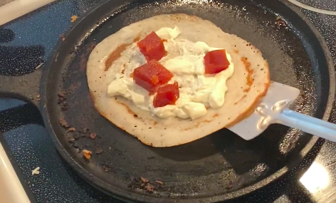

Guava and Cream Cheese Dosa

Guava and Cream Cheese Dosa made on the stove
Ingredients
- Sesame Oil
- Premade Dosa Batter (If you would like to make your own you can find recipes online)
- Spreadable Cream Cheese
- Guava paste
Steps
- Preheat a cast iron tawa (skillet) to medium heat
- Drop 1/4 tsp of seasame oil on the hot skillet and spread around using a paper towel to cover the entire tawa
- Using a steel bottom cup or steel ladle, pour 1 cup of the dosa batter on the tawa and spread in a circular motion to make a thin pancake like shape
- Let the dosa cook until you see brown coming through on the dosa. This only takes about 2-3 minutes
- Once you see brown coming through, spread cream cheese on the dosa and then slices of guava paste on top. (Is it up to you how much you would like. I ususally use 3 or 4 slices
- Using a steel spatula, fold the dosa 3 times to make a nice crepe like roll
- Flip the dosa over to get a nice crisp on the seal
- Using the spatula, cut the dosa in half to make 2 halves
- Serve Hot!